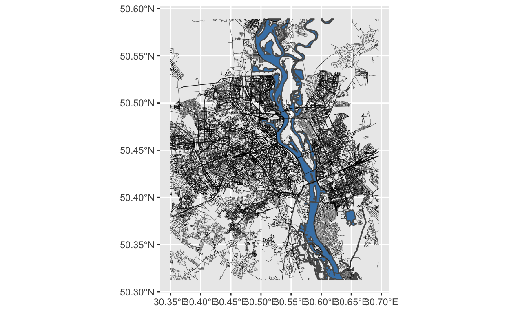

2021-01-18 Update
I had this post published originally on 2019-12-19 on my old version of the website, which ran on HUGO. As I was migrating the content from HUGO to Distill, I purged a lot of stuff that I deemed unnecessary, this post being among the purged ones. By that time, I found several really good online guides on how to print street maps more efficiently (McCrain 2020) (Burkhart, n.d.). However, a few people12 asked about my original post since then, and I felt that I owe it to the intrawebs to put it back on.
Framed and hung! Data as an art form! #rstats #dataviz #maps #gis https://t.co/TFNOAanbzb pic.twitter.com/1lR48CwEhD
— Taras Kaduk (@taraskaduk) December 19, 2019
Introduction
In this tutorial, I will walk you through the process of creating street maps using nothing but R code. After going through the steps in the post, you should be able to get the map of the city of your choice. You can then order prints of your output.3
The Process
sf (Pebesma 2018) and osmdata (Padgham et al. 2017) are the working horses of this process, with tidyverse (Wickham et al. 2019) providing the tools to manipulate the data. The rest of the packages handle one-off jobs in the process.
Obtain data
In the initial version of this post, I relied on Geofabrik Download Server to get OSM data for the city of my interest. Since then, I discovered osmdata package as a much better alternative to my original process.
I will be creating a map of Kyiv, Ukraine, but the process should be identical for any other city (except for mapping the bodies of water, which can get tricky)
place <- "Kyiv Ukraine"
highway_sizes <- tibble::tribble(
~highway, ~highway_group, ~size,
"motorway", "large", 0.5,
"motorway_link", "large", 0.3,
"primary", "large", 0.5,
"primary_link", "large", 0.3,
"secondary", "medium", 0.3,
"secondary_link", "medium", 0.3,
"tertiary", "medium", 0.3,
"tertiary_link", "medium", 0.3,
"residential", "small", 0.2,
"living_street", "small", 0.2,
"unclassified", "small", 0.2,
"service", "small", 0.2,
"footway", "small", 0.2
)
streets_osm <- opq(place) %>%
add_osm_feature(key = "highway",
value = highway_sizes$highway) %>%
osmdata_sf()
streets <- streets_osm$osm_lines %>%
select(osm_id, name, name.en, highway, maxspeed, oneway, surface) %>%
mutate(length = as.numeric(st_length(.))) %>%
left_join(highway_sizes, by="highway") %>%
filter(highway_group != "small" | length >= quantile(length, probs = 0.25))
railways_osm <- opq(place) %>%
add_osm_feature(key = "railway", value="rail") %>%
osmdata_sf()
railways <- railways_osm$osm_lines %>%
dplyr::select()
For water, a lot depend on how you want to map it. If you only want to show the river as a line, you shouldn’t have a problem with key-value pair of “waterway”-“river”.
I wanted to map the Dnipro river (the river that runs through Kyiv, as well as through all of Ukraine) as it is on the map. My code below accomplishes that, but it may not work for your body of water. Please do research on key-value pairs for your case then.
water_osm <- opq(place) %>%
add_osm_feature(key = "natural", value = "water") %>%
osmdata_sf() %>%
unname_osmdata_sf()
river_osm <- opq(place) %>%
add_osm_feature(key = "waterway", value = c("river", "riverbank")) %>%
osmdata_sf() %>%
unname_osmdata_sf()
water <- c(water_osm, river_osm) %>%
.$osm_multipolygons %>%
select(osm_id, name) %>%
mutate(area = st_area(.)) %>%
# this filter gets rid of tiny isolated lakes et cetera
filter(area >= quantile(area, probs = 0.75))
Finding borders
This is by far the most complicated part of the code. How to determine which part of these shapefiles to print? You have roads and water data for the city, and that data goes beyond the actual city limits. At the same time, do you want the entire city? Do you want zoom in or zoom out? There are many ways to go about this problem, and I’ll try to list a few solutions.
Scenario 1: Go by the city’s borders
Perhaps, the easiest approach is to go by the city’s (or metro area’s) borders. In the existing workflow, these are provided, I just needed to find what I wanted:
#First, get all admin boundaries associated with your request
all_boundaries <- opq(place) %>%
add_osm_feature(key = "boundary",
value = c("administrative")) %>%
osmdata_sf() %>%
#This next step is optional, depending on what the call returns
unname_osmdata_sf() %>%
.$osm_multipolygons
ggplot(data = all_boundaries) +
geom_sf()


Scenario 2: A circular map
The algorithm for this approach is to find a center point on the map, then draw a circle around that center point. The inspiration and the code for this approach came from “The Beautiful Hidden Logic of Cities” (Davis 2019).
You will need to know your center’s coordinates, the desired radius in meters, as well as your local crs projection (to re-project the coordinates in order to draw a circle with a radius given in meters).
crs2 <- 6384 # https://epsg.io/6384
center <- c(long = 30.522,
lat = 50.451)
center_proj <- tibble(lat = center["lat"], long = center["long"]) %>%
st_as_sf(coords = c("long", "lat"), crs = 4326) %>%
st_transform(crs = crs2)
dist <- 10000
circle <- tibble(lat = center["lat"], long = center["long"]) %>%
st_as_sf(coords = c("long", "lat"), crs = 4326) %>%
st_transform(crs = crs2) %>%
st_buffer(dist = dist) %>%
st_transform(crs = 4326)

Scenario 3.1: Rectangular map, known margins
To cut out a clear square or rectangle, there is a bit more work to do. The easiest way is if we know the margins — in that case, we only need to pass the marginal latitudes and longitudes to a bbox variable:
bbox <- c(xmin= your_lowest_lat,
ymin=your_leftmost_long,
xmax= your_highest_lat,
ymax= your_rightmost_long)
Scenario 3.2: Rectangular map, known center, known radius, unknown margins
If we know a desired center, and know (or guess) a radius, constructing a crop box becomes a matter of drawing a circle around the center, and then finding the tangents on each of four sides.
An extra complication: if we don’t want a square, but a rectangular map. I wanted a 4:5 ratio. What to do? Draw another circle, and then use 2 data points from each to form a box.
circle2 <- tibble(lat = center["lat"], long = center["long"]) %>%
st_as_sf(coords = c("long", "lat"), crs = 4326) %>%
st_transform(crs = crs2) %>%
st_buffer(dist = dist/0.8) %>%
st_transform(crs = 4326)
bbox2 <- st_bbox(circle2)
bbox <- c(bbox1$xmin, bbox2$ymin, bbox1$xmax, bbox2$ymax)
Scenario 3.3: Rectangular map, with points on the map (memorable places, landmarks, etc)
This is the longest of all possible scenarios.
If you are going to plot some personal data points on top, this is the time upload your data. Here is a sample I used:
points <- tibble::tribble(
~Place, ~Lat, ~Long, ~Type, ~Person,
"Abcde", 50.433374, 30.426781, "A", "A",
"Abcde", 50.500973, 30.36365, "A", "A",
"Abcde", 50.456738, 30.622579, "B", "A",
"Abcde", 50.427142, 30.468178, "C", "A",
"Abcde", 50.427348, 30.423886, "C", "A",
"Abcde", 50.425519, 30.436046, "C", "A",
"Abcde", 50.504877, 30.469968, "D", "A",
"Abcde", 50.455176, 30.524202, "D", "A",
"Abcde", 50.42226, 30.425524, "E", "A",
"Abcde", 50.428142, 30.430448, "E", "A",
"Abcde", 50.439139, 30.553577, "A", "B",
"Abcde", 50.40741, 30.401694, "A", "B",
"Abcde", 50.520441, 30.49738, "A", "B",
"Abcde", 50.397799, 30.513417, "A", "B",
"Abcde", 50.447156, 30.431727, "B", "B",
"Abcde", 50.427097, 30.519814, "B", "B",
"Abcde", 50.516017, 30.60801, "E", "B",
"Abcde", 50.509067, 30.46301, "A", "C",
"Abcde", 50.454697, 30.505255, "C", "C",
"Abcde", 50.450976, 30.522568, "D", "C",
"Abcde", 50.420312, 30.528391, "D", "C",
"Abcde", 50.459616, 30.521638, "D", "C",
"Abcde", 50.437684, 30.527156, "D", "C",
"Abcde", 50.457284, 30.438777, "E", "C",
"Abcde", 50.500091, 30.602264, "E", "C"
)
points_sf <- points %>%
st_as_sf(coords = c("Long", "Lat"), crs = 4326)
Another thing that we need to do now is to make sure that all points fit inside the printed map. We’re going to find the limits on all sides. Out of curiosity, we also can find the center of such map.
My approach is slightly different and more complicated though. I have a predetermined center in mind (and I assume you will as well), but I also want to make sure all of my points fit in the map, while center remains center. I need to find the longest of four distances from the center to the top, bottom, left, and right, and use that as my new length. I also will be adding an extra kilometer to the distance to have the furthest point not completely on the edge of the map
center <- c(long = 30.5224974,
lat = 50.4508911)
top1 <- pointDistance(center, c(center["long"], top), lonlat = TRUE)
bottom1 <- pointDistance(center, c(center["long"], bottom), lonlat = TRUE)
right1 <- pointDistance(center, c(right, center["lat"]), lonlat = TRUE)
left1 <- pointDistance(center, c(left, center["lat"]), lonlat = TRUE)
dist <- max(top1,
bottom1,
right1,
left1) + 1000
Now that we have a center and a radius, we can draw the box the same way we did in Scenario 3.2.
circle1 <- tibble(lat = center["lat"], long = center["long"]) %>%
st_as_sf(coords = c("long", "lat"), crs = 4326) %>%
st_transform(crs = crs2) %>%
st_buffer(dist = dist) %>%
st_transform(crs = 4326)
bbox1 <- st_bbox(circle1)
circle2 <- tibble(lat = center["lat"], long = center["long"]) %>%
st_as_sf(coords = c("long", "lat"), crs = 4326) %>%
st_transform(crs = crs2) %>%
st_buffer(dist = dist/0.8) %>%
st_transform(crs = 4326)
bbox2 <- st_bbox(circle2)
bbox <- c(bbox1$xmin, bbox2$ymin, bbox1$xmax, bbox2$ymax)
Cutting the map
With borders determined (one of several ways above), we are ready to crop the map to its desired size. If we’ve been cutting out a rectangular shape, we can use a st_crop() function to crop the shapefiles. Otherwise, we’ll need st_intersection()
If you want to you the city/metro/district/etc borders, the code and the initial output will look something like this:
streets_cropped <- streets %>% st_intersection(boundary)
water_cropped <- water %>% st_intersection(boundary)
railways_cropped <- railways %>% st_intersection(boundary)

A circle crop will have a very similar code, and will most likely run much faster:
streets_cropped <- streets %>% st_intersection(circle)
water_cropped <- water %>% st_intersection(circle)
railways_cropped <- railways %>% st_intersection(circle)

A rectangular crop will have a slightly different code, as mentioned before, and will run even faster:

Plotting
Now, to the plotting. This is where most of the tweaking is going to happen. Pick colors, opacity, width of the streets, order of layers etc etc. At some point, I wrote a double-layered for loop to iterate over several shades of gray and several versions of street widths, generating 64 different chart combinations. And that’s just for 2 parameters alone with values very close to one another! The possibilities here are endless. Have fun customizing the look!
Here is my final version:
blankbg <-theme(axis.line=element_blank(),
axis.text.x=element_blank(),
axis.text.y=element_blank(),
axis.ticks=element_blank(),
axis.title.x=element_blank(),
axis.title.y=element_blank(),
legend.position = "none",
plot.background=element_blank(),
panel.grid.minor=element_blank(),
panel.background=element_blank(),
panel.grid.major=element_blank(),
plot.margin = unit(c(t=2,r=2,b=2,l=2), "cm"),
plot.caption = element_text(color = "grey20", size = 142,
hjust = .5, face = "plain",
family = "Didot"),
panel.border = element_blank()
)
p <- ggplot() +
blankbg +
geom_sf(data = water,
fill = "steelblue",
# size = .8,
lwd = 0,
alpha = .3) +
geom_sf(data = railways,
color = "grey30",
size = .2,
linetype="dotdash",
alpha = .5) +
geom_sf(data = streets %>%
filter(highway_group == "small"),
size = .1,
color = "grey40") +
geom_sf(data = streets %>%
filter(highway_group == "medium"),
size = .3,
color = "grey35") +
geom_sf(data = streets %>%
filter(highway_group == "large"),
size = .5,
color = "grey30") +
geom_sf(
data = points_sf,
aes(#size = Size,
col = Person),
alpha = 0.8,
size = 2
) +
labs(caption = 'Kyiv') +
coord_sf(xlim = c(bbox[1], bbox[3]),
ylim = c(bbox[2], bbox[4]),
expand = FALSE)
And, of course, save the plot on hard drive to printing.
ggsave("kyiv_map.png", plot=p, width = 297, height = 420, units = "mm", dpi = "retina")
ggsave("map.svg", plot=p)

This is pretty much it! From here, you can take the file into a program that works with vector images (e.g. Adobe Illustrator, Inkspace, Affinity Designer et cetera) to further tweak it by hand before ordering prints.
Enjoy!
Burkhart, Christian. n.d. “Streetmaps.” https://ggplot2tutor.com/streetmaps/streetmaps/.
Davis, Erin. 2019. “The Beautiful Hidden Logic of Cities.” July 27, 2019. https://erdavis.com/2019/07/27/the-beautiful-hidden-logic-of-cities/.
McCrain, Josh. 2020. “Pretty Street Maps in R with the Osmdata Package and Ggplot.” March 17, 2020. https://joshuamccrain.com/tutorials/maps/streets_tutorial.html.
Padgham, Mark, Bob Rudis, Robin Lovelace, and Maëlle Salmon. 2017. “Osmdata.” The Journal of Open Source Software 2 (14). https://doi.org/10.21105/joss.00305.
Pebesma, Edzer. 2018. “Simple Features for R: Standardized Support for Spatial Vector Data.” The R Journal 10 (1): 439–46. https://doi.org/10.32614/RJ-2018-009.
Wickham, Hadley, Mara Averick, Jennifer Bryan, Winston Chang, Lucy D’Agostino McGowan, Romain François, Garrett Grolemund, et al. 2019. “Welcome to the tidyverse.” Journal of Open Source Software 4 (43): 1686. https://doi.org/10.21105/joss.01686.
https://twitter.com/tamara_cheng/status/1312697647099244544↩︎
https://twitter.com/heyitsmehugo/status/1341874708464197632↩︎
I personally do not recommend printing at home, unless you are equipped with an art printer capable of printing A3 format. As my spouse is a visual artist, among many other things, we have a large art printer and a variety of best art and archival paper, as well as tools for cutting and framing art. Nevertheless, I find A3 to be very small for street maps like this. I suggest finding a local print shop and taking your final results there.↩︎